ДИВЕРГЕНТ
“What makes you different, makes you dangerous”
Антиутопический мир будущего, в котором каждый житель последнего из городов цивилизации должен занять своё законное место путём строгого отбора в одну из пяти фракций. В каждой из фракций преобладает то или иное качество: бесстрашие, дружелюбие, искренность, эрудиция и отречение. Отбор проводится в возрасте 16 лет и определяет выбор человека на всю оставшуюся жизнь.
В центр по алфавиту вызывают юношей и девушек. Им вручается нож, которым они должны порезать свою ладонь, кровь из которой должна попасть в одну из чаш, содержимое которых символизирует ту или иную фракцию. После чего юноша или девушка идет к представителям той фракции, которую выбрал.
Люди Дружелюбия хотят создать абсолютно мирное общество, свободное от конфликтов и грусти, в котором не будет места войне. Они ценят дружбу и добро. Как и говорят в Искренности, члены Дружелюбия готовы лгать, чтобы сохранить мир.
Члены фракции трудятся в аграрном секторе, расположенном за городом, обеспечивая всех жителей города продовольствием. Они также работают воспитателями и младшим персоналом в больницах.
Члены Дружелюбия носят яркую, но простую одежду. Она красного и жёлтого цветов. Причём в одежде нет какой-то строгости. Друг друга члены фракции приветствуют дружескими объятиями.
ДРУЖЕЛЮБИЕ
ЭРУДИЦИЯ

Члены Эрудиции обладают высоким интеллектом. Они сосредоточены на науке и обучении, умеют говорить правильно и чётко, легко доказывая другим свою правоту.
Фракция поставляет городу врачей, учителей, преподавателей. Также члены Эрудиции ведут учёт людей в других фракциях и совершенствуют различные технологии, которые нужны для жизни города.
В одежде членов Эрудиции обязательно должен присутствовать синий или голубой цвет. Это объясняется тем, что "он успокаивает, а значит стимулирует работу мозга". Кроме этого, большинство людей этой фракции носят очки, даже если у них нормальное зрение.
Люди из фракции Отречение стараются отказать себе во всём. Они даже кормят изгоев, от которых отвернулись всё. Они не тщеславны и не должны потворствовать своим желаниям. Оружие, по их мнению, должно использоваться только для самообороны. Поэтому другие фракции считают Отречение - слабыми.
Люди из Отречения носят серую мешковатую одежду, стараясь не выделяться. Как правило, женщины фракции закалывают волосы в просто пучок, а мужчины - стригутся очень коротко. Единственым разрешённым украшением являются наручные часы. Согласно правилам фракции, её члены не имеют право смотреться на себя в зеркало. Единственное исключение делается раз в три месяца - во время стрижки.
Друг друга люди из Отречения приветствуют кивком головы. Физический контакт не рекомендуется. Любые проявления чувств на публике, в том числе поцелуи, категорически запрещены.
ОТРЕЧЕНИЕ
ИСКРЕННОСТЬ
Люди из фракции Искренность всегда честны, искренни и высоконравственны. Они рассматривают честность как единственную черту человека, благодаря которой он может считаться совершенным. Люди Искренности могут свободно проявлять даже жестокую правду, оскорбительную истину, так как не имеют право лгать ради кого-то.
"Искренние" носят одежду чёрного и белого цветов. Как правило, это обычные костюмы с галстуками для мужчин и длинные юбки для женщин.
Друг друга люди из Искренности приветствуют рукопожатием.
Большинство членов других фракций признали членов Бесстрашия полицией города. Люди из фракции Бесстрашие постоянно тренируют своё тело и учатся боевым навыкам, чтобы всегда быть готовыми отреагировать на возможные угрозы. Члены фракции презирают страх, что подтверждается опасными и даже смертельными трюками, которые они исполняют ежедневно. Например, вместо того, чтобы просто ехать на поезде, запрыгивают в него и выпрыгивают прямо на ходу.
Члены Бесстрашия носят облегающую одежду чёрного цвета, делают себе татуировки и пирсинг, красят волосы в немыслимые цвета.
БЕССТРАШИЕ

Однако есть люди, которых невозможно однозначно определить ни в одну из фракций. Это люди, которые мыслят независимо. Люди, которые не подчиняются системе. Люди, от которых правительство хочет избавиться... и избавляется.
Так вот...
Ты опасен, если ты другой.